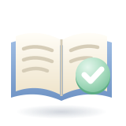
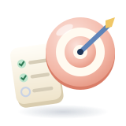

초졸·중졸 검정고시 준비
초졸·중졸 학력 취득을 목표로 기초부터 차근차근 준비하려는 분
기초부터 취약 과목까지, 현재 수준과 목표 시험에 맞춰 준비합니다.
국내·해외 거주자 수업 가능

초·중·고졸 검정고시를 준비하는 학습자의 상황에 맞춰 과목과 일정을 함께 설계합니다.
초등학교·중학교·고등학교 졸업학력 검정고시 과정별 시험 과목에 맞춰 수업을 구성합니다.
응시할 회차까지 남은 기간을 기준으로 과목별 학습 순서와 분량을 정합니다.
방문 없이 화상으로 진행하며, 거주 국가와 시간대를 확인해 가능한 수업 일정을 안내합니다.
검정고시는 준비하는 이유도, 출발점도 학습자마다 다릅니다.
초졸·중졸 학력 취득을 목표로 기초부터 차근차근 준비하려는 분
 CASE 02
CASE 02
고졸 학력 취득과 이후 진로를 목표로 준비하려는 분
 CASE 03
CASE 03
학교 밖에서 자신의 상황에 맞는 학습 계획이 필요한 분
 CASE 04
CASE 04
공부를 다시 시작하거나 일과 학습을 함께 이어가려는 분
 CASE 05
CASE 05
해외에서 한국 검정고시 학습을 화상으로 준비하려는 분
 CASE 06
CASE 06
혼자 공부하다 막히는 과목을 기초부터 설명받고 싶은 분
필수 과목은 개념과 기출 유형 중심으로, 선택 과목은 학습자에게 맞는 과목을 함께 고민합니다.
문학·비문학 지문 읽기와 문법 개념을 기출 유형에 맞춰 정리합니다.
자주 출제되는 단원의 기본 개념과 풀이 순서를 반복해 익힙니다.
기본 어휘와 문법, 짧은 지문 독해를 시험 수준에 맞춰 준비합니다.
핵심 개념과 용어를 정리하고 자료·도표 해석 문제를 연습합니다.
개념의 원리를 이해하고 그림·그래프가 나오는 문제에 익숙해집니다.
시대 흐름을 중심으로 사건과 인물을 연결해 정리합니다.
첫 수업의 출발점을 정하기 위한 예시이며, 공식 시험 범위나 진단검사가 아닙니다. 실제 수강 과목과 순서는 상담 후 정합니다.
국어는 지문의 중심 내용을 정리하며 읽는지, 사회·과학은 정리한 개념을 자료·그래프 문제에 적용할 수 있는지 확인하고 막히는 부분부터 다룹니다.
국어 · 수학 · 영어 · 사회 · 과학 + 선택 1과목
국어 · 수학 · 영어 · 사회 · 과학 · 한국사 + 선택 1과목
선택 과목은 중졸 과정이 도덕·기술·가정·체육·음악·미술·정보 중 1과목, 고졸 과정이 도덕·기술·가정·체육·음악·미술 중 1과목입니다. 결시 없이 전 과목 평균 60점 이상이면 합격하며, 60점 이상인 과목은 과목합격으로 인정됩니다. 응시 자격·시험 일정·세부 사항은 해당 회차 공식 공고를 확인해 주세요. 초졸 과정의 시험 과목은 해당 회차 공식 공고를 기준으로 상담 시 안내합니다.
참고: 서울특별시교육청 중졸 검정고시 안내 · 고졸 검정고시 안내
수업 전에 현재 수준·취약 영역·목표 시험·학습 가능 시간을 먼저 확인하고, 그에 맞는 학습 계획을 세웁니다.

과목마다 어느 단계까지 이해하고 있는지 먼저 확인합니다.

자주 막히는 단원과 유형을 찾아 우선 보완할 부분을 정합니다.

초·중·고졸 과정과 응시하려는 회차를 기준으로 과목별 학습 분량과 순서를 나눕니다.

생활 패턴과 학습 가능 시간, 해외 거주 시 시간대에 맞춰 무리 없는 수업 일정을 잡습니다.
현재 수준에서 출발해 목표 시험까지, 1:1 화상 수업으로 차근차근 준비합니다.
과목별 이해도와 학습 공백을 확인합니다.
필요한 과목과 목표 시험까지의 학습 순서를 정합니다.
이해가 어려운 개념을 설명하고 문제 풀이를 함께 연습합니다.
배운 내용을 복습하고 이해도에 맞춰 다음 진도를 조정합니다.

대구·부산을 비롯해 동탄·분당 등 국내 각 지역과 해외에서 검정고시를 준비하는 분을 위한 1:1 화상 수업입니다. 초·중·고졸 과정과 필요한 과목에 맞춰 상담합니다.
이 안내는 수업 수강에 관한 내용입니다. 시험 응시 자격·접수·시험 장소는 해당 회차 공식 공고를 확인해 주세요.
과목당 월 268,000원
주 2회 · 1회 60분 · 한 달 기준
과목당 월 308,000원
주 2회 · 1회 60분 · 한 달 기준
위 금액은 과목별 한 달 수업 기준입니다.
실제 수업 시간과 수강 과목은 상담 후 정합니다.
수업 구성 변경에 따른 최종 비용은 상담에서 안내합니다.
초졸 과정 수업료는 상담 시 안내합니다.
학생의 과정과 과목, 학습 상황을 고려해 맞는 선생님을 안내합니다.
선생님 배정 기준과 절차는 상담 시 학생의 상황을 확인한 뒤 안내드립니다.